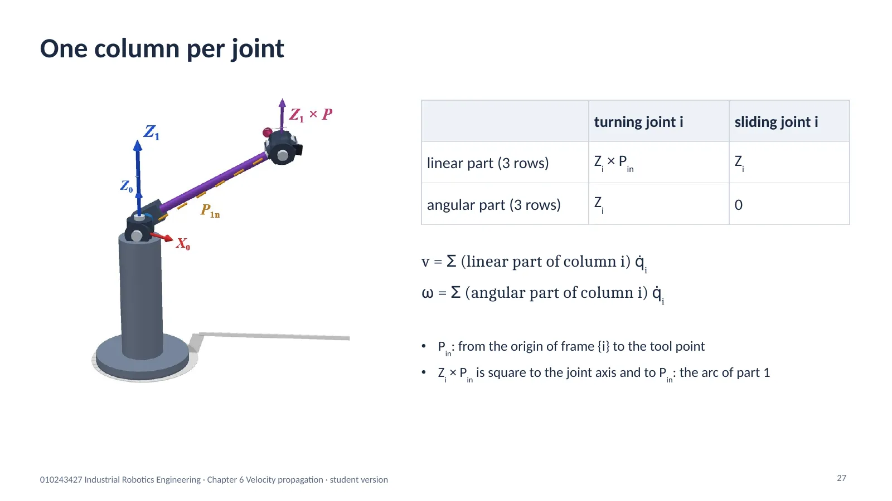
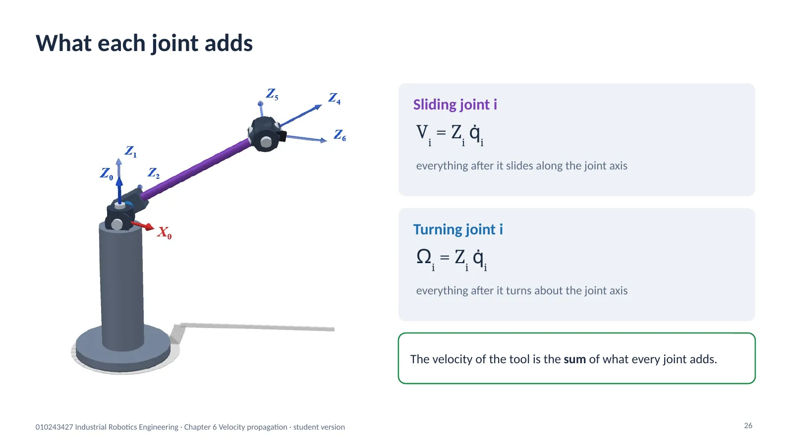
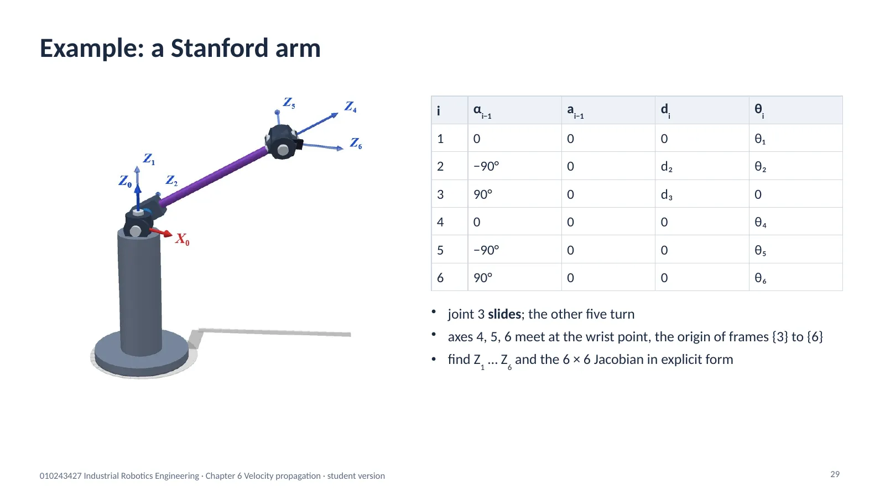
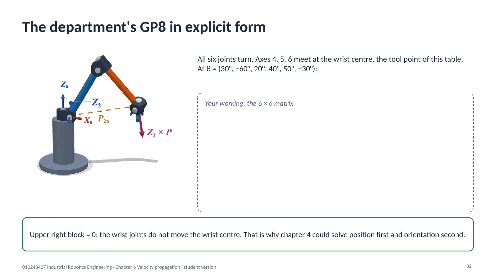
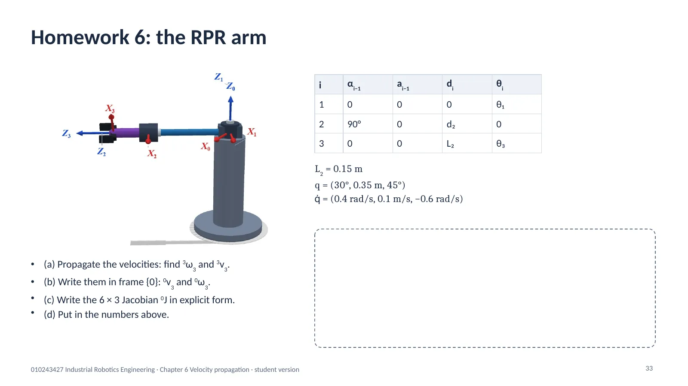
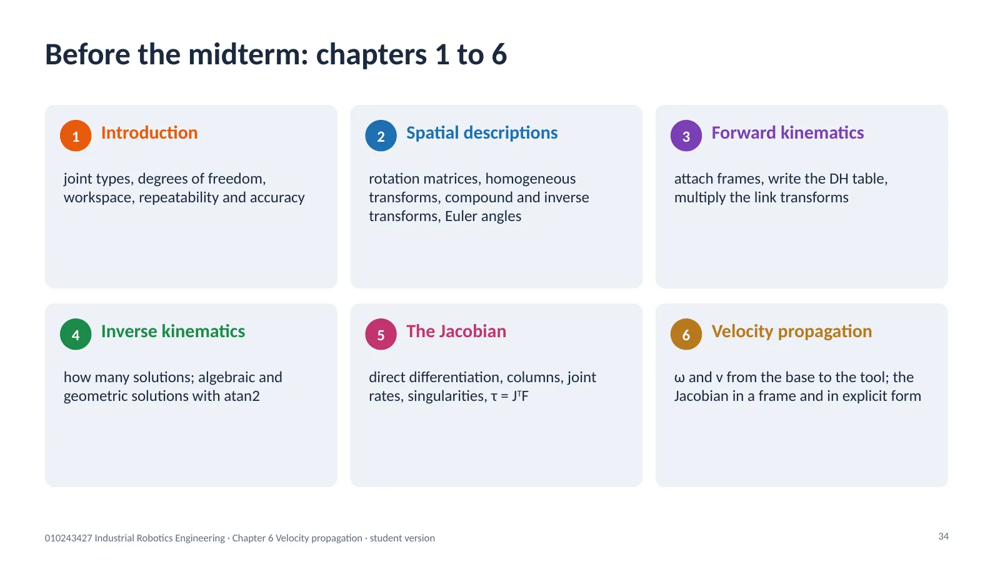

หน้า 6.2 และ 6.3 หาความเร็วของปลายแขนด้วยการส่งต่อความเร็วจากก้านสู่ก้าน แล้วอ่านจาโคเบียน (Jacobian) จากผลที่ได้ ผลนั้นเขียนสรุปไว้ครั้งเดียวแล้วใช้ได้กับทุกแขน: ข้อต่อแต่ละตัวให้หนึ่งคอลัมน์ ซึ่งอ่านจากภาพของแขนได้เลย ข้อต่อหมุนให้ส่วนเชิงเส้น \(Z_i \times P_{in}\) และส่วนเชิงมุม \(Z_i\) ข้อต่อเลื่อนให้ส่วนเชิงเส้น \(Z_i\) และไม่มีส่วนเชิงมุม โดย \(Z_i\) คือแกนของข้อต่อ และ \(P_{in}\) คือเวกเตอร์จากจุดกำเนิดของเฟรม {i} ถึงจุดปลายแขน ทุกตัวเขียนในเฟรม {0} จาโคเบียนที่เขียนแบบนี้เรียกว่ารูปชัดแจ้ง (explicit form) สไลด์เดิมของส่วนนี้ทำตามเอกสารประกอบการสอนของ Khatib หน้านี้ใช้กฎทั้งสองกับแขน Stanford หกข้อต่อและแขน Yaskawa GP8 ของภาควิชา แล้วปิดบทด้วยการบ้านชุดที่ 6 และรายการทบทวนก่อนสอบกลางภาค ครอบคลุมสไลด์หน้า 26–34 มี 4 โจทย์
Pages 6.2 and 6.3 found the velocity of the tool by passing velocities on from link to link, and read the Jacobian off the result. That result can be written down once and for all: every joint gives one column, and the column can be read straight off a picture of the arm. A turning joint gives the linear part \(Z_i \times P_{in}\) and the angular part \(Z_i\); a sliding joint gives the linear part \(Z_i\) and no angular part. \(Z_i\) is the joint axis and \(P_{in}\) the vector from the origin of frame {i} to the tool point, all written in frame {0}. A Jacobian written this way is in explicit form; the old slides follow Khatib's lecture notes here. The page applies the two rules to a six-joint Stanford arm and to the department's Yaskawa GP8, and closes the chapter with homework 6 and a checklist for the midterm. It covers slides pp. 26–34, with 4 problems.

(ก) องค์ประกอบ x, y, z ของส่วนเชิงเส้นของคอลัมน์ 3 (ข้อต่อเลื่อน) ที่ท่าของตัวอย่าง
(a) The x, y, z components of the linear part of column 3 (the sliding joint) at the pose of the example
(ข) ส่วนเชิงมุมของคอลัมน์ของข้อต่อเลื่อนคือ
(b) The angular part of the column of a sliding joint is

(ก) องค์ประกอบ x, y, z ของ \({}^0Z_2\) ที่ θ₁ = 30°
(a) The x, y, z components of \({}^0Z_2\) at θ₁ = 30°
(ข) องค์ประกอบ x, y, z ของส่วนเชิงเส้นของคอลัมน์ 1 คือ \(Z_1 \times P_{1n}\)
(b) The x, y, z components of the linear part of column 1, \(Z_1 \times P_{1n}\)

(ก) องค์ประกอบ x, y, z ของส่วนเชิงเส้นของคอลัมน์ 2 คือ \(Z_2 \times P_{2n}\) ที่ท่าของตัวอย่าง
(a) The x, y, z components of the linear part of column 2, \(Z_2 \times P_{2n}\), at the pose of the example
(ข) ทำไมบล็อก 3 × 3 ที่มุมขวาบนของจาโคเบียนนี้จึงเป็นศูนย์
(b) Why is the 3 × 3 block at the upper right of this Jacobian zero?

หน้านี้ตรวจให้เฉพาะตัวเลขของคำตอบ วิธีทำของการบ้านชุดนี้อธิบายในห้องเรียน
This page checks the numbers only; the worked answers of this homework are discussed in class.

สิ่งที่ควรทำได้ในแต่ละบท ทุกบทมีหน้าเว็บให้ฝึกพร้อมช่องตรวจคำตอบ
What you should be able to do, chapter by chapter. Every chapter has pages on this site with answer checks to practise on.